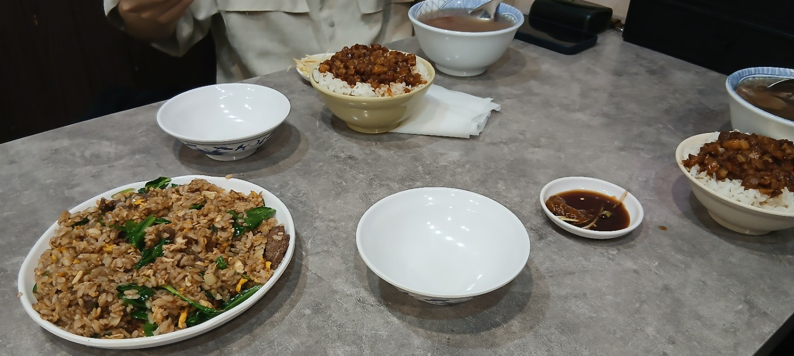
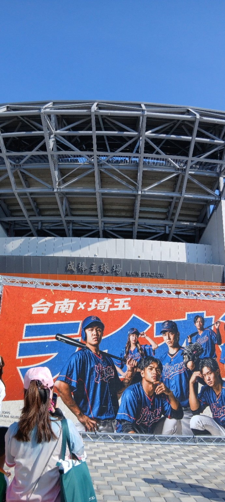
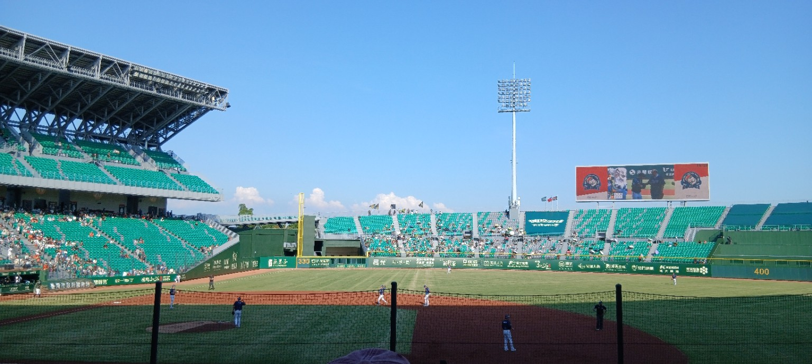
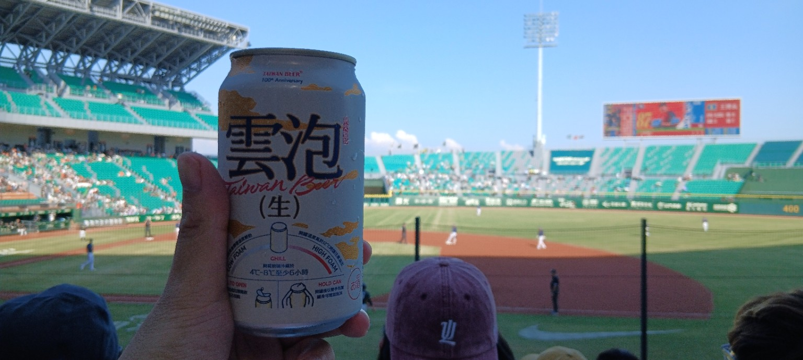
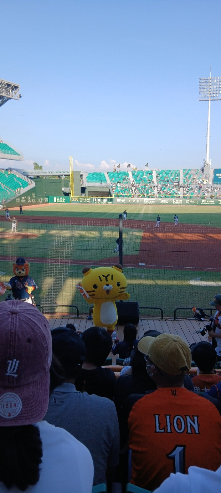
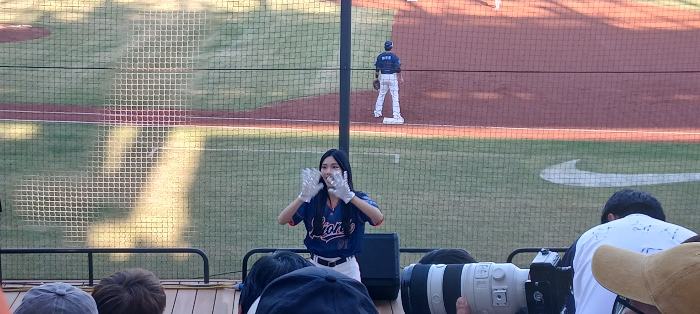
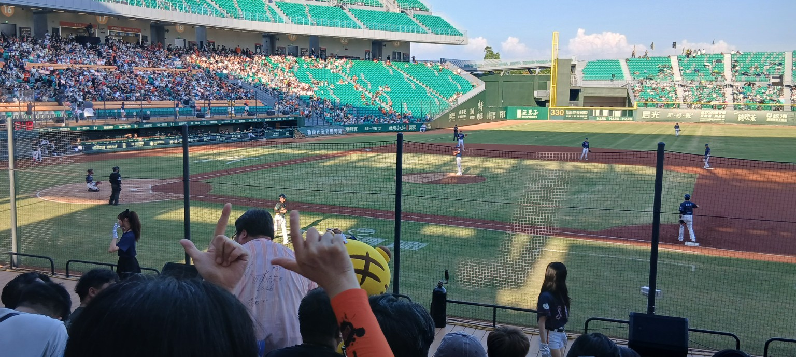
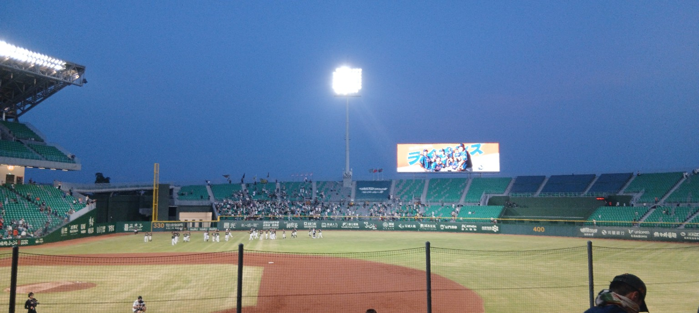
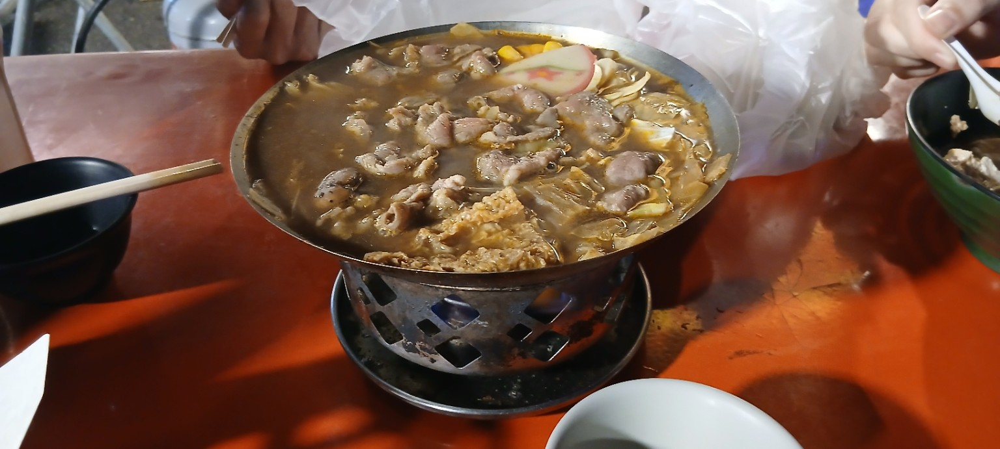
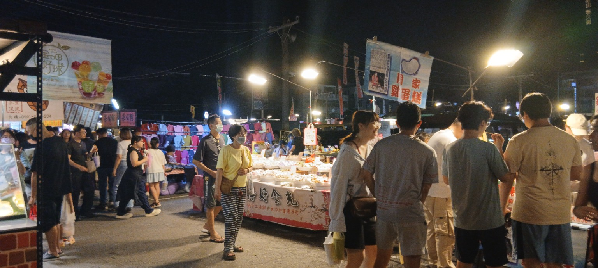

今日は台湾人の友達が誘ってくれて、台湾人一人、日本人三人でユニライオンズの試合を見に行った。 野球ファンというほどではないけれど、球場の空気はやっぱり楽しい。
野球に行く前には、バイト先でご飯を食べた。炒飯がかなりうまかった。 こういう「試合前にしっかり食べてから出かける」感じも、台南生活っぽくていい。

球場の外には「台南×埼玉」の大きな看板。天気もよくて、入る前からかなりイベント感があった。 スタンドに入ると、青空と緑の座席が広がっていて、台湾の野球場らしい開放感があった。




試合は1-0でユニライオンズが負けた。前回見に行ったときも負けたので、まだ勝つところを見られていない。 そこまで野球ファンではないけれど、ここまで来たら一回ぐらい勝つところを見てみたい。




今日の一言：負けたけど、球場で飲むビールと夜市の火鍋は勝ち。
帰りは成功夜市に寄って火鍋を食べた。辛いのがいい。 昼に炒飯、夕方に野球、夜に夜市の火鍋。台南の休日としてはかなり完成度が高かった。
